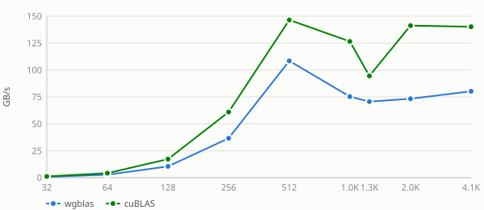

Benchmark results for strsv on Nvidia Geforce Gtx 1650.
Efficiency = wgblas GB/s ÷ cuBLAS GB/s × 100. 100% means parity with cuBLAS; values above 100% mean wgblas achieved greater throughput.

Benchmark results for strsv on Nvidia Geforce Gtx 1650.
Nvidia Geforce Gtx 1650 — wgblas vs cuBLAS

See also